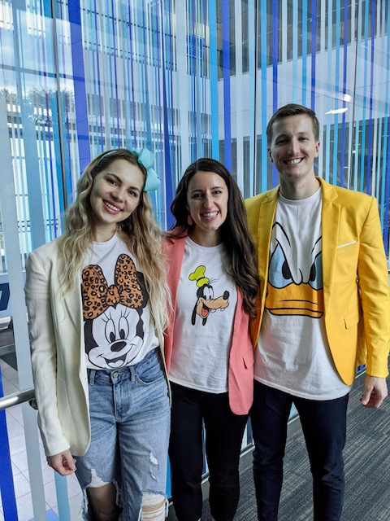

My area of expertise:
Analytics
I have a very analytical mind, and I love data. In my previous role as a financial analyst for a mid-sized software company, I helped the company sort through mountain of data to optimize our spending to minimize cost and maximize revenue.
Since starting my MBA, I have taken every opportunity to get as invovled as possible with analytics and to improve my skils in this area. During the fall of 2021, I was on a team of students that placed 3rd out of 4,000 teams worldwide in the prestigous Adobe Analytics Competition.
Click here to learn more about this competition!
I have also gotten involved in analytics in other ways. Next year I will be serving on the presidency of the Analytics club. I will also be working as a marketing consultant on the Analytics team within BYU's Marketing Lab, a student-run marketing firm that serves real-life clients.
This summer I will be working as a Finance Intern for Marvell Technology, where I will learn more real-world analytics skills and use them to make business decisions.